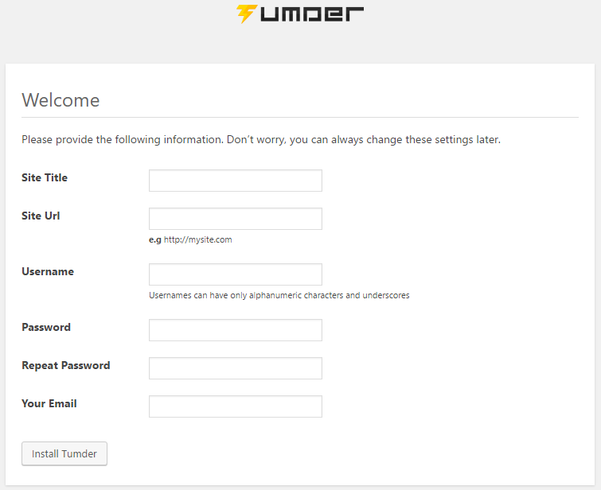
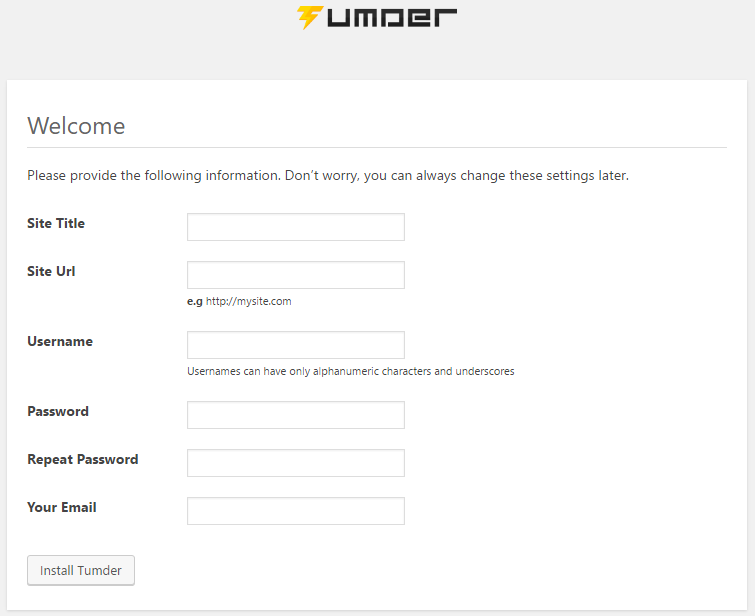

Requirements
Before beginning make sure you have the following:
- PHP 5.4 or higher
- MySQLi installed
- And a lot of games
Installation
Follow this steps to setup Tumder and in few minutes you will have this games platform running in your server- Create a database
- Upload the files inside the "Script" folder on your FTP or local host, you can install this script in root or subfolder, as you prefer. You only need to set the url to the root or subfolder.
- Once you have uploaded Tumder files on your server it is very simple to install it. If you have install Tumder in root of your server simply open your browser then type in the adress of your chat host ex: http://site.com or if you decided to use a subfolder simply go to ex: http://site.com/subfolder/.
- Simply follow these steps and in few minutes you will have a new Game system for you and your friends.
 

Admin sections
-
Global
There you can see the main information of the platform as registered users and available games.
-
Add game
You can add a game to the platform with external information like game url and image direction.
-
Setting
There are you can configure the main parameters of the platform like site title, description, url and admin pin.
-
Games
There are you can see all the installed games, you can configure them or until they publish them as featured.
-
Categories
In this section you can add a new category, delete or edit some.
-
Edit users
Here you can search user by id or username and edit the information.
-
Ads
Here you can add the code of your advertising either google ads or another.
-
Games catalog
Here you can update and add the games from the catalog to the game repository to activate them.
-
Reports
Here you can control the reports sent by users of a game that is failing or whatever.
FAQ
-
¿How and where I can add a new language?
In the /assets/language/ folder make a copy of the english.php file and translate it.
-
¿Where I can add a new theme?
In the /templates/ folder make a copy of the /tumder/ (template by default) and edit it.
-
¿Where I can edit the current theme?
Inside the /templates/YOUR-THEME-FOLDER are all necessary folders to edit the style and structure of the current theme.